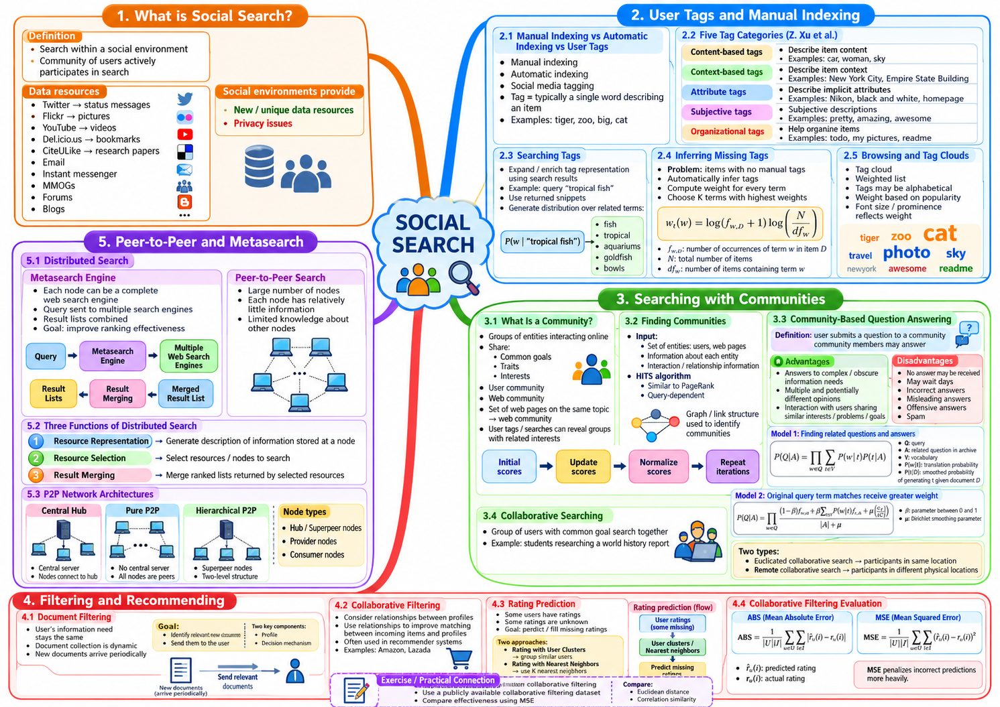

Tài liệu gốc: Slide bài giảng SEG301m Chương 11, "Social Search" (27 slide)
Cách đọc: Chương này tìm hiểu cách khai thác thẻ (tag) do con người gắn, mối quan hệ trong cộng đồng và lịch sử đánh giá vào quá trình tìm kiếm. Dữ liệu do người dùng tạo ra giúp cải thiện tìm kiếm và gợi ý, nhưng đồng thời cũng đòi hỏi phải xử lý tính chủ quan, sự thiên lệch, hành vi thao túng và quyền riêng tư.
Mục tiêu của chương
Sau khi học xong chương này, bạn có thể giải thích và tính toán các nội dung sau:
- Giải thích vì sao social searchtìm kiếm xã hội là khái niệm rộng hơn việc chỉ tìm kiếm bài đăng trên mạng xã hội.
- Phân biệt metadata thủ công, thẻ người dùng và lập chỉ mục tự động; nêu rõ các loại thẻ và giới hạn của chúng.
- Cập nhật lặp ít nhất hai vòng điểm uy tín (authority) và điểm trung tâm (hub) của thuật toán HITS trên đồ thị có hướng nhỏ.
- So sánh điểm số trong hệ thống hỏi đáp cộng đồng (community QA) khi dùng translation modelmô hình dịch kết hợp làm mượt Dirichlet.
- Tính khoảng cách Euclidean, hệ số tương quan Pearson, giá trị dự đoán và MSE trong lọc cộng tác dựa trên người dùng (user-based collaborative filtering).
- Nêu rõ biểu diễn nguồn tài nguyên, chọn lựa nguồn tài nguyên và hợp nhất kết quả trong tìm kiếm P2P và tìm kiếm tổng hợp (metasearch).
SLIDE NGUỒN 1-3

Kiến thức cần chuẩn bị
- Áp dụng PageRank và liên kết có hướng từ Chương 4, chỉ mục từ Chương 5, mô hình ngôn ngữ từ Chương 7.
- Sử dụng các thước đo xếp hạng từ Chương 9. Vì MAE và MSE chưa được định nghĩa chi tiết ở Chương 9 nên sẽ được định nghĩa cụ thể trong Mục 11.4 của chương này.
- Vận dụng khoảng cách, độ tương quan, sự khác biệt giữa phân cụm và láng giềng gần nhất từ Chương 10. ScoreĐiểm không được gọi là xác suất trừ khi công thức được định nghĩa tường minh dưới dạng một phân phối xác suất.
Trong toàn bộ chương này, chúng ta sẽ theo dõi ví dụ xuyên suốt: nhóm sinh viên cùng nhau tìm kiếm "tài liệu nghiên cứu để xây dựng công cụ tìm kiếm nội bộ trường học". Các sinh viên sẽ gắn thẻ cho tài liệu, tra cứu diễn đàn hỏi đáp, nhận gợi ý từ đánh giá của bạn học và tìm kiếm liên nguồn qua nhiều kho dữ liệu.
11.1 Tìm kiếm xã hội
SLIDE NGUỒN 4
Social searchTìm kiếm xã hội là hướng tiếp cận trong đó con người và cộng đồng trực tiếp tham gia vào quá trình tìm kiếm, và thông tin sinh ra từ các hoạt động của họ được tận dụng làm tín hiệu tìm kiếm. Thẻ (tag), dấu trang (bookmark), đánh giá (rating), câu trả lời, lượt chia sẻ và mối quan hệ liên kết (link) giữa người dùng đều là những manh mối giá trị cho hệ thống.
Vì vậy, social search không chỉ đơn thuần là "tìm bài viết trên mạng xã hội". Các trường hợp sau đây đều là tìm kiếm sử dụng tín hiệu xã hội:
- Đưa lên đầu kết quả những tài liệu được các sinh viên học cùng môn lưu lại nhiều nhất.
- Tìm trên diễn đàn hỏi đáp những câu hỏi tương tự kèm câu trả lời được cộng đồng bình chọn cao.
- Gợi ý tài liệu học tập được những người dùng có lịch sử đánh giá tương đồng khen ngợi.
- Trong nghiên cứu nhóm, các thành viên chia sẻ kết quả tìm thấy và ghi chú cho nhau.
Các dịch vụ được nhắc đến trên slide như Twitter, Flickr, YouTube, Del.icio.us, CiteULike là những ví dụ điển hình tại thời điểm tài liệu bài giảng được biên soạn. Cần hiểu Del.icio.us hay CiteULike là các dịch vụ lưu trữ dấu trang xã hội và chia sẻ tài liệu học thuật mang tính lịch sử, không phải lời khuyên dùng các dịch vụ này ở hiện tại.
Hoạt động của con người cung cấp vốn từ vựng và đánh giá chất lượng mà máy móc khó tự sinh ra. Tuy nhiên, lịch sử duyệt web và mối quan hệ cá nhân có thể là dữ liệu riêng tư nhạy cảm. Không được thu thập dữ liệu người dùng khi chưa xác định rõ mục đích, thời hạn lưu trữ, sự đồng ý và cơ chế kiểm soát truy cập.
Xem đáp án gợi ý
Có. Dù đối tượng tìm kiếm là tài liệu văn bản thông thường, hệ thống đã khai thác thẻ do người dùng gắn — một tín hiệu xã hội — vào quá trình tìm kiếm. Bản chất của social search nằm ở việc đưa hoạt động của con người và cộng đồng vào quy trình tìm kiếm, chứ không phụ thuộc vào việc hệ thống đó có phải là mạng xã hội hay không.
11.2 Thẻ người dùng và lập chỉ mục thủ công
SLIDE NGUỒN 5-9
Metadata thủ công, thẻ và lập chỉ mục tự động
Trong danh mục thư viện truyền thống, chuyên viên biên mục nhập tên tác giả, tiêu đề, đề mục chủ đề theo những quy tắc nghiêm ngặt. Đây là ví dụ tiêu biểu của manual indexinglập chỉ mục thủ công. Cách làm này kiểm soát chất lượng rất tốt, nhưng tốn nhiều thời gian và đòi hỏi chuyên môn cao.
User tagThẻ người dùng là các nhãn ngắn gọn do người dùng tự do gán cho đối tượng. Khác với hệ thống phân loại chuyên môn dùng từ vựng kiểm soát (controlled vocabulary), gắn thẻ tự do cho phép đông đảo người dùng cùng tham gia đóng góp từng chút một (folksonomy). Ngược lại, lập chỉ mục tự động (automatic indexing) dùng chương trình máy tính để phân tích nội dung, tiêu đề, liên kết và metadata.
| Phương pháp | Người thực hiện | Ưu điểm chính | Hạn chế chính |
|---|---|---|---|
| Metadata thủ công | Chuyên gia / cán bộ biên mục | Dễ thiết kế từ vựng và trường thông tin nhất quán | Tốn kém chi phí và thời gian |
| Thẻ người dùng | Người dùng đại chúng | Thu thập nhanh từ vựng thực tế và cách gọi mới | Xuất hiện dị bản từ ngữ, tính chủ quan, spam |
| Lập chỉ mục tự động | Hệ thống phần mềm | Xử lý được khối lượng tài liệu khổng lồ | Có thể hiểu sai ngữ cảnh hoặc ý nghĩa ngầm |
Những mục chưa có thẻ vẫn có thể tìm kiếm được nếu tiêu đề, nội dung, tác giả hoặc tên tệp đã được lập chỉ mục. "Không có thẻ" hoàn toàn không đồng nghĩa với "không thể tìm thấy".
Năm nhóm phân loại thẻ
Xét ví dụ một tài liệu học tập: "Bức ảnh chụp cá nhiệt đới màu xanh trong bể thủy cung tại Yokohama, chụp bằng máy ảnh Nikon, dự kiến dùng cho bài báo cáo sau này".
| Nhóm phân loại | Ý nghĩa đại diện | Ví dụ trong bức ảnh này |
|---|---|---|
| Thẻ dựa trên nội dung (content-based) | Đối tượng xuất hiện trực tiếp trong ảnh hoặc tài liệu | cá nhiệt đới, bể cá |
| Thẻ dựa trên ngữ cảnh (context-based) | Địa điểm, sự kiện, hoàn cảnh xung quanh | Yokohama, thủy cung |
| Thẻ thuộc tính (attribute) | Định dạng, thiết bị, thể loại, màu sắc | Nikon, ảnh, màu xanh |
| Thẻ chủ quan (subjective) | Cảm nhận, đánh giá chủ quan của người dùng | đẹp, thư giãn |
| Thẻ tổ chức (organizational) | Mục đích sắp xếp cá nhân hoặc nhóm | cho báo cáo, đọc sau |
Đối với cùng một đối tượng, mỗi người dùng có thể dùng từ ngữ khác nhau: cá nhiệt đới, tropical fish, cá cảnh. Ngoài từ đồng nghĩa, còn có từ đa nghĩa như bass (vừa là cá vược vừa là đàn bass), từ ngữ đa ngôn ngữ, lỗi chính tả, thẻ quảng cáo và thẻ quấy rối. Thẻ là nguồn bằng chứng hữu ích nhưng không thể coi mọi thẻ đều là nhãn chuẩn xác tuyệt đối.
Mở rộng biểu diễn thẻ từ kết quả tìm kiếm
Slide 7 minh họa ví dụ tìm kiếm tropical fish, sau đó thu thập các từ liên quan từ đoạn trích kết quả (snippet) để mở rộng biểu diễn thẻ. Dưới đây là ba đoạn trích được tạo ra cho mục đích giảng dạy, không phải kết quả thực tế từ một công cụ cụ thể:
S1: tropical fish aquarium care and feeding
S2: colorful tropical fish for a freshwater tank
S3: aquarium guide for fish habitats
Quy tắc xử lý được cố định trước như sau:
- Tách chuỗi chữ cái ASCII liên tiếp thành một token.
- Chuyển toàn bộ về chữ thường.
- Loại bỏ tập từ truy vấn
{tropical, fish}. - Loại bỏ tập stopword
{and, for, a}. - Đếm số lần xuất hiện của các token còn lại và chia cho tổng số token.
Chuỗi token sau khi lọc:
S1: aquarium care feeding
S2: colorful freshwater tank
S3: aquarium guide habitats
| Từ | Số lần xuất hiện | Xác suất |
|---|---|---|
| aquarium | 2 | 2/9 ≈ 0.222 |
| care | 1 | 1/9 ≈ 0.111 |
| feeding | 1 | 1/9 ≈ 0.111 |
| colorful | 1 | 1/9 ≈ 0.111 |
| freshwater | 1 | 1/9 ≈ 0.111 |
| tank | 1 | 1/9 ≈ 0.111 |
| guide | 1 | 1/9 ≈ 0.111 |
| habitats | 1 | 1/9 ≈ 0.111 |
Tổng số token còn lại là 9. Vì vậy P(aquarium | tropical fish) = 2/9, và tổng xác suất là 2/9 + 7 × (1/9) = 1. Đây là phân phối minh họa dựa trên giả định từ ba đoạn trích, không phải xác suất phổ quát của chủ đề tropical fish. Nếu đoạn trích hoặc danh sách stopword thay đổi thì phân phối cũng sẽ thay đổi.
Khi đưa phân phối này vào tìm kiếm thẻ, các tài liệu chứa aquarium sẽ dễ được tìm thấy hơn. Tuy nhiên, nếu các kết quả hàng đầu bị lệch về một nét nghĩa cụ thể, hiện tượng trôi truy vấn (query drift) có thể khiến các từ mở rộng xa rời ý định ban đầu của người dùng. Ngoài ra, việc học từ các kết quả hiện tại rồi dùng chính các từ đó để tìm lại có thể tạo ra vòng lặp phản hồi củng cố sự thiên lệch ban đầu. Hệ thống cần kiểm soát tính đa dạng của nguồn tài liệu, giới hạn số từ mở rộng và duy trì trọng số của truy vấn gốc.
Suy luận thẻ bị thiếu
Công thức ở Slide 8 kết hợp tần số từ trong mục tài liệu D với tần số tài liệu trong bộ sưu tập:
f_{w,D}: số lần từwxuất hiện trong mục đang xétD.df_w: số mục tài liệu chứa từwít nhất 1 lần (tần số tài liệu, không phải tổng số lần xuất hiện trong toàn bộ sưu tập).N: tổng số mục trong bộ sưu tập.K: số từ được chọn làm thẻ suy luận.- Trong ví dụ này,
loglà logarit tự nhiênln, điểm số được làm tròn đến 3 chữ số thập phân.
Xét bộ sưu tập gồm 4 mục tài liệu, trong đó mục D1 chưa có thẻ:
| Mục | Từ và số lần xuất hiện |
|---|---|
| D1 | aquarium×3, tropical×2, fish×2, guide×1 |
| D2 | aquarium×1, fish×1 |
| D3 | tropical×1, reef×2 |
| D4 | fish×2, guide×1 |
Ở đây N = 4, df(aquarium) = 2, df(tropical) = 2, df(fish) = 3, df(guide) = 2.
| Từ | f_{w,D1} |
df_w |
Phép tính | Trọng số wt |
|---|---|---|---|---|
| aquarium | 3 | 2 | ln(4)ln(2) |
0.961 |
| tropical | 2 | 2 | ln(3)ln(2) |
0.762 |
| fish | 2 | 3 | ln(3)ln(4/3) |
0.316 |
| guide | 1 | 2 | ln(2)ln(2) |
0.480 |
Nếu K = 2, hệ thống chọn aquarium và tropical làm thẻ suy luận. Cần quy định trước quy tắc giải quyết hòa điểm (ví dụ xếp theo thứ tự bảng mã Unicode). Những từ có df = N sẽ có ln(N / df) = 0, giúp loại trừ các từ chung chung xuất hiện ở mọi tài liệu. Các tiêu chí như danh sách stopword hay độ dài từ tối thiểu cũng cần được cố định từ tập huấn luyện.
Cách đọc đám mây thẻ (Tag cloud)
Đám mây thẻ (tag cloud) liệt kê danh sách các thẻ và biểu thị độ quan trọng thông qua kích thước chữ hoặc độ đậm. Vì mỗi hệ thống định nghĩa kích thước dựa trên chỉ số khác nhau, giao diện cần ghi rõ kích thước đại diện cho số lượt gắn thẻ, số người dùng hay tần suất trong 30 ngày gần nhất.
Một thẻ có kích thước lớn có thể chỉ vì nó phổ biến rộng rãi, chứ không đồng nghĩa với việc nó có độ liên quan cao đến một truy vấn cụ thể. Nếu màu sắc hoặc vị trí của thẻ mang ý nghĩa phân loại, cần có chú thích bằng chữ thay vì chỉ dựa vào hình ảnh trực quan.
Xem đáp án gợi ý
Không đồng nghĩa. Tổng số lần xuất hiện là tổng số lần từ đó xuất hiện trong mọi tài liệu gộp lại, còn df là số lượng tài liệu có chứa từ đó ít nhất một lần. Nếu một từ xuất hiện 100 lần nhưng chỉ nằm trong duy nhất 1 tài liệu thì giá trị đóng góp vào df chỉ là 1.
11.3 Tìm kiếm dựa trên cộng đồng
SLIDE NGUỒN 10-16
Cộng đồng trực tuyến và cộng đồng Web
Online communityCộng đồng trực tuyến là tập hợp các thực thể có chung mục tiêu, mối quan tâm hoặc thuộc tính, tương tác với nhau trong môi trường mạng. Thực thể ở đây có thể là người dùng, trang web hoặc hội nhóm. Trong tìm kiếm, cần phân biệt rõ ba loại thông tin:
- Đối tượng (object): người dùng, trang web, câu hỏi, câu trả lời.
- Thuộc tính (attribute): chủ đề, thời điểm đăng, chuyên môn, đánh giá.
- Quan hệ (relation): theo dõi, phản hồi, liên kết, đồng chỉnh sửa, lưu cùng tài liệu.
Một tập hợp các trang web liên kết với nhau về cùng một chủ đề có thể được gọi là một cộng đồng Web (Web community). Tuy nhiên, việc các trang có chung chủ đề không đồng nghĩa với việc giữa chúng có mối quan hệ xã hội như nhóm người trong đời thực.
Điểm uy tín (authority) và điểm trung tâm (hub) trong HITS
Thuật toán HITS (Hyperlink-Induced Topic Search) bắt đầu bằng việc tìm tập gốc (root set) liên quan đến truy vấn, mở rộng thành tập cơ sở (base set) bằng cách thêm các trang được liên kết đến hoặc liên kết tới tập gốc, rồi tính toán lặp hai loại điểm số trên đồ thị con này:
- Hub scoreĐiểm trung tâm: Trang càng trỏ tới nhiều trang uy tín tốt thì điểm trung tâm càng cao. Hub scoreĐiểm trung tâm: Trang càng trỏ tới nhiều trang uy tín tốt thì điểm trung tâm càng cao.
Cạnh X → Y biểu thị X đặt liên kết trỏ tới Y. Quá trình cập nhật điểm authority dùng các cạnh đi vào, còn cập nhật điểm hub dùng các cạnh đi ra.
Trong ví dụ này, ở mỗi vòng lặp, điểm authority mới được tính từ điểm hub cũ, chuẩn hóa bằng chuẩn L2, sau đó điểm hub mới được tính từ điểm authority mới này và lại chuẩn hóa bằng chuẩn L2. Có thể triển khai cập nhật đồng thời, nhưng phải giữ nhất quán một quy ước.
Ví dụ với đồ thị 5 đỉnh
Tập cạnh có hướng:
A → C, D
B → C
C → D
D → C
E → C, D
Vector hub ban đầu: h^(0) = (1, 1, 1, 1, 1). Thứ tự đỉnh là A, B, C, D, E. Chuẩn L2 được tính theo công thức ||x||₂ = √(Σ x_i²).
Vòng 1: Cập nhật authority
a_raw^(1) = (0, 0, 4, 3, 0)
||a_raw^(1)||₂ = 5
a^(1) = (0, 0, 0.8000, 0.6000, 0)
Đỉnh C nhận 4 liên kết đến từ A, B, D, E; đỉnh D nhận 3 liên kết đến từ A, C, E.
Vòng 1: Cập nhật hub
h_raw^(1) = (1.4000, 0.8000, 0.6000, 0.8000, 1.4000)
||h_raw^(1)||₂ = √5.56 ≈ 2.35797
h^(1) = (0.5937, 0.3393, 0.2545, 0.3393, 0.5937)
Vòng 2
| Vector | A | B | C | D | E |
|---|---|---|---|---|---|
a_raw^(2) |
0 | 0 | 1.8660 | 1.4419 | 0 |
a^(2) |
0 | 0 | 0.7913 | 0.6114 | 0 |
h_raw^(2) |
1.4027 | 0.7913 | 0.6114 | 0.7913 | 1.4027 |
h^(2) |
0.5948 | 0.3355 | 0.2593 | 0.3355 | 0.5948 |
Đỉnh C có điểm authority cao nhất, còn A và E là hai hub hàng đầu vì cùng trỏ tới cả hai trang uy tín là C và D. HITS trả về thứ tự authority và hub, chứ không phải là thuật toán tự động phân tách đồ thị thành các cụm cộng đồng không giao nhau.
PageRank thường được tính toán như một điểm số dừng duy nhất trên toàn bộ đồ thị Web tĩnh. Ngược lại, HITS tính toán tương hỗ giữa authority và hub trên tập cơ sở phụ thuộc vào từng truy vấn cụ thể. Cả hai đều khai thác liên kết nhưng là hai thuật toán có cơ chế khác nhau.
Điều kiện dừng có thể đặt là max(|a^(k) - a^(k-1)|, |h^(k) - h^(k-1)|) < 10^-6 hoặc tối đa 100 vòng. Nếu một đỉnh không có cạnh nào và vector bằng 0 thì không thể chuẩn hóa, khi đó cần có quy tắc xử lý (ví dụ gán điểm bằng 0).
Nếu việc tìm tập gốc (root set) không chính xác, tập cơ sở (base set) có thể bị mở rộng sang các chủ đề khác (topic drift). Hơn nữa, các link farmtrang trại liên kết và liên kết chéo nhân tạo có thể thao túng điểm số, nên một trang có điểm HITS cao chưa chắc đã là trang thông tin công tâm và chính xác.
Hỏi đáp dựa trên cộng đồng (Community-based QA)
Hỏi đáp cộng đồng có hai cách tiếp cận chính:
- Đăng câu hỏi mới lên cộng đồng và đợi người khác vào trả lời.
- Tìm kiếm trong kho lưu trữ (archive) các câu hỏi và câu trả lời tương tự đã có từ trước.
Hệ thống hỏi đáp tự động ở Chương 12 sẽ trích xuất hoặc chọn lọc câu trả lời từ kho văn bản. Chủ thể xử lý ở đó là máy móc, khác với hỏi đáp cộng đồng vốn lấy con người làm nguồn tri thức chính.
Việc hỏi người thật rất hữu ích cho các câu hỏi phức tạp hoặc cần tham khảo nhiều luồng ý kiến, nhưng nhược điểm là câu hỏi có thể không có ai trả lời, thời gian chờ lâu, hoặc nhận phải câu trả lời sai, spam, công kích. Tìm kiếm trong kho lưu trữ thì nhanh chóng, nhưng hệ thống phải giải quyết được bài toán diễn đạt khác nhau (paraphrasing).
Mô hình A: Xử lý diễn đạt khác nhau bằng xác suất dịch (translation probability)
Công thức ở Slide 14:
Q: truy vấn hiện tại của người dùng, gồm chuỗi các từ truy vấn.A: câu hỏi ứng viên trong kho lưu trữ.V: từ vựng của mô hình.P(w|t): xác suất từtở phía câu hỏi ứng viên tương ứng với từ truy vấnw. Chiều xác suất ở đây làP(w|t), không phảiP(t|w).P(t|A): xác suất làm mượt thể hiện câu hỏi ứng viênAsinh ra từt.
Trên slide, phần công thức dùng ký hiệu A còn phần giải thích dùng D. Tài liệu này thống nhất dùng A để chỉ câu hỏi ứng viên. Khái niệm "dịch" ở đây không chỉ là dịch giữa hai ngôn ngữ khác nhau, mà bao gồm cả việc dịch từ đồng nghĩa hay cách diễn đạt tương đương trong cùng một ngôn ngữ (chẳng hạn giữa tìm kiếm và tra cứu).
Giả định từ vựng minh họa V = {tìm kiếm, tra cứu, động cơ, hệ thống}. Các số liệu sau đây là giả định để minh họa cách tính:
t |
P(tìm kiếm|t) |
P(động cơ|t) |
Phần xác suất còn lại cho các từ khác |
|---|---|---|---|
| tìm kiếm | 0.70 | 0.10 | 0.20 |
| tra cứu | 0.35 | 0.05 | 0.60 |
| động cơ | 0.10 | 0.75 | 0.15 |
| hệ thống | 0.20 | 0.45 | 0.35 |
Với mỗi từ điều kiện t ở mỗi dòng, tổng xác suất trỏ tới hai từ truy vấn và phần còn lại luôn bằng 1. Cho xác suất bộ sưu tập P_C = (0.30, 0.20, 0.20, 0.30), tham số Dirichlet μ = 2, sử dụng công thức làm mượt Dirichlet:
Xét hai câu hỏi ứng viên: A1 = tìm kiếm, tra cứu, động cơ và A2 = tìm kiếm, hệ thống, hệ thống. Truy vấn là Q = tìm kiếm, động cơ. Cả hai ứng viên đều có độ dài |A| = 3, nên mẫu số là |A| + μ = 3 + 2 = 5. Phân phối sau khi làm mượt:
| Ứng viên | P(tìm kiếm|A) | P(tra cứu|A) | P(động cơ|A) | P(hệ thống|A) | Tổng |
| --- | ---: | ---: | ---: | ---: | ---: |
| A1 | (1+0.6)/5=0.32 | (1+0.4)/5=0.28 | (1+0.4)/5=0.28 | (0+0.6)/5=0.12 | 1.00 |
| A2 | (1+0.6)/5=0.32 | (0+0.4)/5=0.08 | (0+0.4)/5=0.08 | (2+0.6)/5=0.52 | 1.00 |
Tiếp theo, tính tổng tích xác suất dịch cho từng từ truy vấn:
A1, w = tìm kiếm:
0.70(0.32) + 0.35(0.28) + 0.10(0.28) + 0.20(0.12) = 0.374
A1, w = động cơ:
0.10(0.32) + 0.05(0.28) + 0.75(0.28) + 0.45(0.12) = 0.310
A2, w = tìm kiếm:
0.70(0.32) + 0.35(0.08) + 0.10(0.08) + 0.20(0.52) = 0.364
A2, w = động cơ:
0.10(0.32) + 0.05(0.08) + 0.75(0.08) + 0.45(0.52) = 0.330
| Ứng viên | Tổng tích cho P(tìm kiếm|A) |
Tổng tích cho P(động cơ|A) |
Tích điểm | ln score |
|---|---|---|---|---|
| A1 | 0.374 | 0.310 | 0.11594 | -2.1547 |
| A2 | 0.364 | 0.330 | 0.12012 | -2.1193 |
Như vậy A1 đạt 0.374 × 0.310 = 0.11594, còn A2 đạt 0.364 × 0.330 = 0.12012. Xét điểm logarit, ln(0.11594) = -2.1547 và ln(0.12012) = -2.1193. Vì vậy A2 xếp trên A1. Trong Mô hình A này, do mối liên hệ giả định giữa hệ thống và động cơ khá mạnh nên A2 nhỉnh hơn một chút. Trong thực tế, tích của nhiều xác suất nhỏ dễ gây tràn số dưới (underflow), nên người ta thường dùng Σ log(...).
Mô hình B: Kết hợp khớp trực tiếp và xác suất dịch
Công thức ở Slide 15 kết hợp cả tần số xuất hiện trực tiếp, tần số quy đổi từ dịch thuật và tần số trong toàn bộ sưu tập vào cùng một tử số:
f_{w,A}: số lần từ truy vấnwxuất hiện trực tiếp trongA.f_{t,A}: số lần từ vựngtxuất hiện trongA.c_w / |C|: tần suất tương đối củawtrong toàn bộ sưu tập.β ∈ [0, 1]: tỷ lệ hòa trộn giữa khớp trực tiếp và thành phần dịch thuật.μ ≥ 0: trọng số làm mượt theo mô hình bộ sưu tập.
Khi đặt β = 0.4 và μ = 2:
A1, w = tìm kiếm: [(0.6)(1) + (0.4)(1.15) + (2)(0.30)] / 5 = 0.332
A1, w = động cơ: [(0.6)(1) + (0.4)(0.90) + (2)(0.20)] / 5 = 0.272
P(Q|A1) = 0.332 × 0.272 = 0.090304, ln = -2.4046
A2, w = tìm kiếm: [(0.6)(1) + (0.4)(1.10) + (2)(0.30)] / 5 = 0.328
A2, w = động cơ: [(0.6)(0) + (0.4)(1.00) + (2)(0.20)] / 5 = 0.160
P(Q|A2) = 0.328 × 0.160 = 0.052480, ln = -2.9473
Trong cấu hình này, ứng viên A1 (có chứa trực tiếp cả hai từ) xếp trên A2. Tuy nhiên, không phải lúc nào khớp trực tiếp cũng vượt trội. Nếu β = 1, hệ thống chỉ dựa vào thành phần dịch, và theo bảng số liệu giả định thì A2 sẽ nhỉnh hơn. Nếu β = 0, hệ thống hoàn toàn bỏ qua dịch thuật. Khi tăng μ lên rất lớn, điểm của cả hai ứng viên đều tiệm cận về phân phối chung của bộ sưu tập và khoảng cách giữa chúng sẽ thu hẹp lại.
Tìm kiếm cộng tác (Collaborative searching)
Collaborative searchingTìm kiếm cộng tác là quá trình một nhóm người có chung mục tiêu cùng nhau thực hiện hoạt động tìm kiếm. Cần phân biệt rõ khái niệm này với collaborative filteringlọc cộng tác vốn là kỹ thuật gợi ý dựa trên lịch sử đánh giá của người dùng tương đồng.
Ví dụ trong bài tập nhóm: sinh viên A phụ trách "thẻ xã hội", sinh viên B phụ trách "hỏi đáp cộng đồng", sinh viên C phụ trách "quyền riêng tư". Nhóm dùng một bảng chung để lưu lại các câu truy vấn đã dùng, nguồn tài liệu được chọn, lý do bác bỏ tài liệu không phù hợp và đoạn trích dẫn quan trọng, tránh tình trạng nhiều người làm trùng việc. Cuối cùng, cả nhóm cùng kiểm tra lại đơn vị phát hành, ngày tháng và tính xác thực của các bằng chứng.
- Cùng địa điểm (co-located): Ngồi cùng phòng học, cùng nhìn chung màn hình và trao đổi trực tiếp.
- Từ xa (remote): Ở các địa điểm khác nhau, phối hợp qua tài liệu trực tuyến dùng chung, kênh chat và dấu trang chia sẻ.
Trong làm việc nhóm, việc phân công nhiệm vụ, đặt ra quy tắc tích hợp bằng chứng và lưu lại lịch sử ai đã đưa ra quyết định nào là những yếu tố then chốt.
11.4 Lọc tài liệu và gợi ý
SLIDE NGUỒN 17-22
Lọc tài liệu
Trong bài toán document filteringlọc tài liệu, nhu cầu thông tin của người dùng được lưu trữ lâu dài dưới dạng hồ sơ (profile). Khi các tài liệu mới liên tục đổ về hệ thống theo thời gian thực, hệ thống sẽ so khớp tài liệu với hồ sơ đó. Cơ chế ra quyết định (decision mechanism) dựa trên điểm số để quyết định có gửi thông báo cho người dùng hay không.
Nếu áp dụng quy tắc đơn giản score ≥ threshold, việc hạ thấp ngưỡng sẽ giúp bắt được nhiều tài liệu hơn nhưng lại làm tăng thông báo rác (dương tính giả). Ngược lại, nâng ngưỡng cao sẽ giảm thông báo thừa nhưng lại dễ bỏ sót tài liệu quan trọng (âm tính giả). Nếu hồ sơ không được cập nhật định kỳ thì không bắt kịp sự thay đổi mối quan tâm của người dùng, nhưng nếu cập nhật quá nhạy theo từng lượt nhấp chuột nhất thời thì hệ thống sẽ bị thiên lệch quá mức.
Gợi ý dựa trên nội dung (content-based recommendation) so sánh thuộc tính, từ ngữ của mục với hồ sơ người dùng. Gợi ý collaborative filteringlọc cộng tác khai thác mối quan hệ đánh giá giữa người dùng và các mục. Ngoài ra còn có các phương pháp lai (hybrid) kết hợp cả hai hướng tiếp cận.
Ma trận người dùng - mục (User-Item Matrix)
Thang điểm đánh giá từ 1 đến 5. Ký hiệu "chưa đánh giá" trong bảng là giá trị bị khuyết (missing value), tuyệt đối không được gán bằng 0.
| Người dùng | I1 Nhập môn tìm kiếm | I2 SEO | I3 Đánh giá | I4 Gợi ý | I5 XML |
|---|---|---|---|---|---|
| A | 5 | 3 | 4 | Chưa đánh giá | Chưa đánh giá |
| B | 5 | 3 | 4 | 4 | 2 |
| C | 4 | 2 | 4 | 5 | 1 |
| D | 1 | 5 | 2 | 1 | 5 |
| E | 2 | 4 | 1 | 2 | 4 |
Phương pháp phân cụm gom các người dùng tương tự thành từng nhóm, rồi lấy điểm trung bình của cụm để ước lượng giá trị còn thiếu. Phương pháp láng giềng gần nhất (nearest-neighbor method) tìm kiếm các người dùng có độ tương đồng cao nhất riêng cho từng đối tượng mục tiêu. Phân cụm giúp tính toán nhanh và gọn nhưng dễ cố định những người ở vùng ranh giới vào một cụm cứng nhắc. Láng giềng gần nhất linh hoạt hơn theo từng trường hợp nhưng đòi hỏi phải tính toán tìm kiếm láng giềng mỗi lần dự đoán.
Khoảng cách Euclidean và tương quan Pearson
Tập các mục mà cả hai người dùng u và v đều đã đánh giá được ký hiệu là I_uv.
Khoảng cách càng nhỏ nghĩa là hai người càng gần nhau. Ngược lại, hệ số tương quan càng lớn nghĩa là mẫu hình đánh giá của hai người càng giống nhau. Ở đây khoảng cách được chuyển sang độ tương đồng qua công thức sim_d = 1 / (1 + d). Đối với tương quan Pearson, hệ thống chỉ giữ lại các giá trị dương; không được coi tương quan âm là "tương đồng vì có độ lớn tuyệt đối cao".
Người dùng A và B có điểm số ở I1, I2, I3 giống hệt nhau, nên d = 0, sim_d = 1, ρ = 1. Giữa A và C:
d(A,C) = √[(5-4)² + (3-2)² + (4-4)²] = √2 ≈ 1.414
sim_d = 1 / (1 + √2) ≈ 0.414
ρ(A,C) ≈ 0.866
Dự đoán điểm đánh giá cho I4
Điểm dự đoán được tính bằng cách dịch chuyển theo điểm trung bình của người dùng, sử dụng K = 2 láng giềng hàng đầu:
Điểm trung bình chỉ được tính trên tập huấn luyện: r̄_A = 4.0, r̄_B = 3.6, r̄_C = 3.2.
Độ tương đồng Euclidean:
r̂_A,I4 = 4 + [1(4 - 3.6) + 0.414(5 - 3.2)] / (1 + 0.414)
≈ 4.810
Độ tương đồng Pearson:
r̂_A,I4 = 4 + [1(4 - 3.6) + 0.866(5 - 3.2)] / (1 + 0.866)
≈ 5.050
Vì thang đánh giá tối đa là 5, giá trị 5.050 được cắt gọn (clip) về 5. Cần ghi chú rõ việc cắt ngưỡng này và giữ lại số liệu thô trước khi cắt để kiểm tra.
Các trường hợp thất bại và cơ chế dự phòng (Fallback)
- Không có mục đánh giá chung nào: không thể tính được độ tương đồng giữa hai người dùng.
- Chỉ có 2 mục đánh giá chung: hệ số Pearson rất dễ rơi vào trường hợp cực đoan
±1, do đó cần đặt ngưỡng số lượng mục chung tối thiểu. - Toàn bộ điểm đánh giá chung của một người có phương sai bằng 0: mẫu số của Pearson bằng 0, không tính được.
- Không có láng giềng hợp lệ nào từng đánh giá mục tiêu: cần kích hoạt cơ chế dự phòng (fallback), ví dụ dùng điểm trung bình của người dùng, trung bình của mục, hoặc trung bình toàn cục.
- Tổng trọng số tương đồng bằng 0: không thể tính giá trị trung bình có trọng số.
- Người dùng mới hoặc mục mới (vấn đề khởi động nguội - cold start): chưa có bất kỳ dữ liệu đánh giá nào, cần dựa vào thuộc tính nội dung hoặc khảo sát sở thích ban đầu.
Sẽ rất thiếu công bằng nếu một phương pháp loại bỏ các trường hợp lỗi ra khỏi tập đánh giá còn phương pháp kia thì không. Khi so sánh các mô hình, phải dùng chung tập cặp kiểm thử và báo cáo kèm theo độ coverageđộ bao phủ cùng tỷ lệ kích hoạt cơ chế fallback.
Sai số tuyệt đối, MAE, MSE, RMSE
Độ chênh lệch giữa giá trị dự đoán r̂ và giá trị thực tế r được gọi là sai số dự đoán r̂ - r. Sai số tuyệt đối trung bình (Mean Absolute Error, MAE) là trung bình của các giá trị tuyệt đối sai số; sai số toàn phương trung bình (Mean Squared Error, MSE) là trung bình của các bình phương sai số; RMSE là căn bậc hai của MSE.
Ký hiệu ABS trong Slide 22 đại diện cho sai số tuyệt đối trung bình trên toàn bộ các cặp người dùng - mục được dự đoán, tức là MAE theo thuật ngữ chuẩn. Ký hiệu |U||I| trên slide có thể gây hiểu nhầm là tích Đề-các của toàn bộ tập người dùng và tập mục, nhưng phần diễn giải bài học làm rõ rằng chỉ tính trên tập các cặp có dự đoán thực tế. Chúng ta định nghĩa tập kiểm thử là T và chia cho số lượng phần tử |T|:
Kết quả bài thực hành offline với độ đo Euclidean:
| Cặp kiểm thử | Giá trị thực | Điểm dự đoán | Sai số tuyệt đối | Sai số bình phương |
|---|---|---|---|---|
| A-I4 | 5 | 4.6667 | 0.3333 | 0.1111 |
| B-I5 | 2 | 2.9998 | 0.9998 | 0.9996 |
| C-I1 | 4 | 4.0000 | 0.0000 | 0.0000 |
| D-I3 | 2 | 1.9666 | 0.0334 | 0.0011 |
Tổng hợp: MAE ≈ 0.3416, MSE ≈ 0.2780, RMSE ≈ 0.5272. Do bình phương sai số, MSE phạt rất nặng những dự đoán sai lệch lớn và đơn vị đo là bình phương của thang điểm đánh giá. Cần lưu ý rằng một mô hình có MSE thấp chưa chắc đã đem lại danh sách gợi ý top-N tốt, bởi thước đo này không đánh giá được tính bất ngờ (novelty), độ đa dạng hay mức độ hài lòng thực tế của người dùng. Để đánh giá chất lượng xếp hạng, cần kết hợp các chỉ số như NDCG ở Chương 9.
11.5 P2P và tìm kiếm tổng hợp
SLIDE NGUỒN 23-25
Trong tìm kiếm phân tán (distributed search), dữ liệu tìm kiếm nằm rải rác ở nhiều nguồn tài nguyên khác nhau. Ngoài các bước tìm kiếm thông thường, hệ thống cần xử lý thêm ba công đoạn:
- Biểu diễn nguồn tài nguyên (resource representation): Mô tả nội dung từng nguồn nắm giữ thông qua vốn từ vựng, số lượng tài liệu hoặc mẫu trích xuất.
- Result mergingHợp nhất kết quả: Gộp các danh sách kết quả từ nhiều nguồn thành một danh sách xếp hạng thống nhất.
- Result mergingHợp nhất kết quả: Gộp các danh sách kết quả từ nhiều nguồn thành một danh sách xếp hạng thống nhất.
Metasearch engineCông cụ tìm kiếm tổng hợp gửi truy vấn đến một số công cụ tìm kiếm hoàn chỉnh độc lập, rồi tổng hợp kết quả trả về của từng bên. Trong khi đó, tìm kiếm P2P (mạng ngang hàng) gồm rất nhiều nút (node) phân tán, mỗi nút chỉ quản lý một lượng dữ liệu nhỏ và chỉ biết thông tin về các nút láng giềng lân cận.
| Kiến trúc | Đặc điểm | Vai trò của Hub / Super-peer |
|---|---|---|
| Hub trung tâm (central hub) | Đăng ký và lựa chọn các nút cung cấp tại một điểm trung tâm | Đóng vai trò là điểm điều hướng và chọn nguồn duy nhất |
| P2P thuần túy (pure P2P) | Các nút tự chuyển tiếp truy vấn sang các nút lân cận | Không có nút hub chuyên trách |
| P2P phân cấp (hierarchical P2P) | Các siêu nút (super-peer) quản lý từng nhóm nút cung cấp | Hỗ trợ lưu trữ biểu diễn nguồn, định tuyến và gom kết quả |
Ở Slide 25, nút màu đen là hub hoặc super-peer, nút màu xám là nút cung cấp (provider), nút màu trắng là người dùng yêu cầu (consumer). Nút cung cấp đưa dữ liệu và kết quả lên mạng lưới, còn người dùng phát lệnh truy vấn. Trong một số thiết kế linh hoạt, một nút có thể kiêm nhiệm nhiều vai trò tùy theo hoàn cảnh.
Ví dụ hợp nhất kết quả từ ba nguồn
Giả sử truy vấn là social search privacy. Dựa trên biểu diễn tài nguyên, hệ thống xác định nguồn S1 chứa nhiều bài báo về truy xuất thông tin xã hội, S2 chứa nhiều chính sách quyền riêng tư, còn S3 chuyên về ảnh. Hệ thống quyết định chỉ gửi truy vấn tới S1 và S2, tạm thời bỏ qua S3.
| Nguồn | Thứ bậc trong nguồn | Tài liệu | Điểm số trong nguồn |
|---|---|---|---|
| S1 | 1 | D-A | 12.4 |
| S1 | 2 | D-B | 10.1 |
| S2 | 1 | D-B | 0.92 |
| S2 | 2 | D-C | 0.88 |
Vì điểm số 12.4 và 0.92 do hai mô hình khác nhau tính ra nên không thể so sánh trực tiếp. Ví dụ bổ sung dưới đây dùng phương pháp Reciprocal Rank Fusion (RRF) - một kỹ thuật không phụ thuộc vào điểm số gốc mà chỉ dựa vào thứ bậc:
Tài liệu trùng lặp D-B được gom chung về một mã định danh chuẩn hóa:
D-B: 1/62 + 1/61 = 0.03252
D-A: 1/61 = 0.01639
D-C: 1/62 = 0.01613
Thứ tự xếp hạng hợp nhất là D-B > D-A > D-C. Nếu việc phát hiện trùng lặp chỉ so sánh chuỗi ký tự URL đơn thuần thì các trang có cùng nội dung nhưng khác URL sẽ bị giữ lại; vì vậy cần áp dụng kỹ thuật chuẩn hóa URL (canonicalization) và mã băm dấu vân tay nội dung (content fingerprint).
Bài tập gốc: Lọc cộng tác láng giềng gần nhất
SLIDE NGUỒN 26
Mục tiêu của bài tập là tự triển khai phương pháp láng giềng gần nhất, áp dụng cùng một cách phân chia dữ liệu và cùng một quy tắc dự đoán để so sánh độ đo Euclidean và độ đo tương quan Pearson thông qua chỉ số sai số MSE.
A. Ví dụ thực hành offline độc lập
Đoạn mã sau chỉ sử dụng các thư viện chuẩn của Python. Bốn cặp đánh giá dùng để kiểm thử được tách rời hoàn toàn khỏi TRAIN, đảm bảo không bị rò rỉ vào bước tính độ tương đồng, tính giá trị trung bình hay lựa chọn láng giềng. Cấu hình bài toán: K = 2, số mục chung tối thiểu là 2, Pearson chỉ nhận tương quan dương, và điểm dự đoán được cắt gọn trong khoảng từ 1 đến 5. Nếu không có láng giềng hợp lệ, hệ thống sẽ kích hoạt cơ chế dự phòng lấy điểm trung bình của người dùng.
from math import sqrt
from statistics import mean
TRAIN = {
"A": {"I1": 5, "I2": 3, "I3": 4},
"B": {"I1": 5, "I2": 3, "I3": 4, "I4": 4},
"C": {"I2": 2, "I3": 4, "I4": 5, "I5": 1},
"D": {"I1": 1, "I2": 5, "I4": 1, "I5": 5},
"E": {"I1": 2, "I2": 4, "I3": 1, "I4": 2, "I5": 4},
}
TEST = [("A", "I4", 5), ("B", "I5", 2),
("C", "I1", 4), ("D", "I3", 2)]
K = 2
MIN_COMMON = 2
def user_mean(user):
return mean(TRAIN[user].values())
def similarities(user, other):
common = sorted(set(TRAIN[user]) & set(TRAIN[other]))
if len(common) < MIN_COMMON:
return None, None
x = [TRAIN[user][item] for item in common]
y = [TRAIN[other][item] for item in common]
distance = sqrt(sum((a - b) ** 2 for a, b in zip(x, y)))
euclidean = 1 / (1 + distance)
x_bar, y_bar = mean(x), mean(y)
dx = [a - x_bar for a in x]
dy = [b - y_bar for b in y]
denominator = sqrt(sum(a*a for a in dx) * sum(b*b for b in dy))
pearson = None if denominator == 0 else sum(
a*b for a, b in zip(dx, dy)
) / denominator
return euclidean, pearson
def predict(user, item, metric):
neighbors = []
for other, ratings in TRAIN.items():
if other == user or item not in ratings:
continue
euclidean, pearson = similarities(user, other)
similarity = euclidean if metric == "euclidean" else pearson
if similarity is None or similarity <= 0:
continue
neighbors.append((similarity, other))
neighbors.sort(key=lambda pair: (-pair[0], pair[1]))
neighbors = neighbors[:K]
if not neighbors:
return user_mean(user), True
numerator = sum(
similarity * (TRAIN[other][item] - user_mean(other))
for similarity, other in neighbors
)
denominator = sum(abs(similarity) for similarity, _ in neighbors)
if denominator == 0:
return user_mean(user), True
raw = user_mean(user) + numerator / denominator
return min(5, max(1, raw)), False
for metric in ("euclidean", "pearson"):
squared_errors = []
fallback_count = 0
for user, item, actual in TEST:
predicted, used_fallback = predict(user, item, metric)
fallback_count += int(used_fallback)
squared_errors.append((predicted - actual) ** 2)
print(metric, user, item, f"pred={predicted:.4f}", f"true={actual}")
mse = sum(squared_errors) / len(squared_errors)
coverage = 1 - fallback_count / len(TEST)
print(metric, f"MSE={mse:.6f}", f"coverage={coverage:.2%}")
Kết quả thực thi mã:
euclidean A I4 pred=4.6667 true=5
euclidean B I5 pred=2.9998 true=2
euclidean C I1 pred=4.0000 true=4
euclidean D I3 pred=1.9666 true=2
euclidean MSE=0.277953 coverage=100.00%
pearson A I4 pred=5.0000 true=5
pearson B I5 pred=2.0000 true=2
pearson C I1 pred=4.0000 true=4
pearson D I3 pred=1.4000 true=2
pearson MSE=0.090000 coverage=100.00%
Trong ví dụ nhỏ này, độ đo Pearson có giá trị MSE thấp hơn, nhưng vì tập kiểm thử chỉ gồm 4 điểm nên chưa thể đưa ra kết luận tổng quát rằng Pearson luôn vượt trội hơn. Dữ liệu này thậm chí còn chứa trường hợp tương quan tuyệt đối chỉ dựa trên đúng 2 mục đánh giá chung. Để có kết luận vững chắc hơn, cần mở rộng dữ liệu và điều chỉnh các siêu tham số như MIN_COMMON hay K trên tập kiểm định (validation data).
B. Tái hiện thực nghiệm trên tập dữ liệu công khai
Tập dữ liệu MovieLens ml-latest-small do nhóm nghiên cứu GroupLens phát hành chính thức là bộ dữ liệu đánh giá quy mô nhỏ rất phổ biến. Trang tải chính thức và tệp README đã được kiểm tra đối chiếu vào ngày 29 tháng 9 năm 2026. Bản phát hành ngày 26 tháng 9 năm 2018 bao gồm 610 người dùng, 9.742 bộ phim và 100.836 lượt đánh giá.
Dữ liệu đầu vào cần thiết cho bài thực hành này chỉ là tệp ratings.csv sau khi giải nén. Tệp gồm các cột userId,movieId,rating,timestamp, với thang điểm từ 0.5 đến 5.0 (bước nhảy 0.5). Tệp movies.csv chỉ cần dùng khi muốn hiển thị tên phim cụ thể. Kho lưu trữ mã nguồn này không lưu trữ trực tiếp tệp ZIP hay dữ liệu đã giải nén của MovieLens.
Kịch bản tái hiện thực nghiệm nằm tại scripts/movielens-cf-example.py, hoàn toàn chỉ sử dụng thư viện chuẩn:
python scripts/movielens-cf-example.py C:\path\to\ml-latest-small\ratings.csv `
--seed 30112 --rating-min 0.5 --rating-max 5.0
Các quy tắc xử lý trong kịch bản:
- Cố định
seed = 30112, xáo trộn các dòng dữ liệu của từng người dùng một cách tất định. - Người dùng có dưới 3 lượt đánh giá sẽ được đưa toàn bộ vào tập huấn luyện. Với các người dùng còn lại, tối thiểu 1 lượt được đưa vào tập kiểm định, 1 lượt vào tập kiểm thử, phần còn lại đưa vào tập huấn luyện.
- Cả hai phương pháp Euclidean và Pearson đều dùng chung một cách phân chia và kiểm thử trên cùng một tập đối tượng.
- Chọn siêu tham số
K ∈ {10, 20}và số mục chung tối thiểu∈ {2, 3}hoàn toàn dựa trên chỉ số MSE của tập kiểm định. Nếu hòa điểm thì ưu tiên giá trịKnhỏ hơn, rồi đến số mục chung nhỏ hơn. - Chỉ dùng tập huấn luyện để tính độ tương đồng, điểm trung bình, chọn láng giềng và tối ưu tham số. Tuyệt đối không nhìn trước điểm số của tập kiểm thử.
- Nếu một trong hai người dùng có phương sai bằng 0, không đủ số mục chung, hoặc không có láng giềng nào có độ tương đồng dương, hệ thống sẽ kích hoạt cơ chế dự phòng lấy điểm trung bình huấn luyện của người dùng đó. Nếu người dùng đó cũng không có điểm huấn luyện thì lấy điểm trung bình toàn cục.
- Giá trị dự đoán được cắt gọn vào đúng khoảng thang điểm chỉ định trong câu lệnh. Không tự ý áp đặt thang điểm 1 đến 5 cho các tập dữ liệu khác nhau.
- Tính toán cả MSE và MAE trên toàn bộ tập kiểm thử. Tỷ lệ dự đoán thành công không cần dự phòng được ghi nhận là độ coverageđộ bao phủ, song song với tỷ lệ kích hoạt cơ chế dự phòng.
Nếu sửa đổi giá trị đánh giá trong tập kiểm thử thành các con số khác thì ma trận huấn luyện, độ tương đồng, điểm trung bình, danh sách láng giềng được chọn và giá trị dự đoán đều không hề thay đổi. Thứ duy nhất thay đổi là sai số đánh giá ở bước cuối cùng. Dữ liệu kiểm định chỉ phục vụ chọn tham số, không được dùng làm dữ liệu kiểm thử.
Tài liệu này không tự động tải về các bộ dữ liệu ngoài, do đó không báo cáo kết quả số liệu cụ thể của MovieLens trong bài viết. Kịch bản đã được kiểm tra trên dữ liệu thử nghiệm nhỏ để xác minh tính đúng đắn của việc phân chia, xử lý phương sai bằng 0, xử lý khi không có láng giềng, cơ chế dự phòng, cắt ngưỡng giá trị và không làm rò rỉ dữ liệu kiểm thử. Khi thực hành trên dữ liệu thực tế, hãy lưu lại phiên bản ghi trong README, mã băm SHA/MD5 của tệp ZIP, câu lệnh đã chạy và số lượng mẫu phân chia cùng với bảng kết quả.
Tổng kết
SLIDE NGUỒN 27
- Tìm kiếm xã hội khai thác các tín hiệu sinh ra từ hoạt động của con người như thẻ, đánh giá, câu trả lời và các mối quan hệ xã hội.
- Thẻ người dùng giúp làm phong phú vốn từ tự nhiên nhưng cũng đi kèm với từ đồng nghĩa, từ đa nghĩa, sự khác biệt ngôn ngữ, tính chủ quan và spam.
- HITS cập nhật tương hỗ điểm authority và điểm hub từ đồ thị liên kết có hướng, nhưng không trực tiếp phân tách các cụm cộng đồng.
- Trong tìm kiếm kho lưu trữ hỏi đáp cộng đồng, có thể kết hợp khớp trực tiếp với xác suất dịch thuật để xử lý các cách diễn đạt khác nhau.
- Tìm kiếm cộng tác là việc con người cùng phối hợp tìm kiếm, còn lọc cộng tác là phương pháp gợi ý dựa trên mối quan hệ đánh giá.
- Trong lọc cộng tác láng giềng gần nhất, cần xử lý cẩn thận dữ liệu khuyết, số lượng đánh giá chung tối thiểu, dấu của tương quan, cơ chế dự phòng và tránh rò rỉ dữ liệu kiểm thử.
- Tìm kiếm P2P và tìm kiếm tổng hợp đòi hỏi ba khâu xử lý cốt lõi: biểu diễn nguồn tài nguyên, chọn lựa nguồn tài nguyên và hợp nhất kết quả.
Câu hỏi tự kiểm tra
- Vì sao một tài liệu không có thẻ người dùng vẫn có thể tìm kiếm được trong hệ thống?
- Trong công thức suy luận thẻ, trọng số của một từ có
df = Nsẽ bằng bao nhiêu? - Khi có liên kết
X → Y, cạnh này đóng góp vào bước cập nhật điểm số nào của X và Y? - Vì sao không được hoán đổi vị trí giữa
P(w|t)vàP(t|w)? - Điểm khác biệt cơ bản giữa collaborative searchingtìm kiếm cộng tác và collaborative filteringlọc cộng tác là gì?
- Điều gì sẽ xảy ra nếu chọn láng giềng trong tương quan Pearson chỉ dựa trên độ lớn tuyệt đối mà bỏ qua dấu âm?
- Vì sao không thể chỉ dựa vào chỉ số MSE để đánh giá toàn diện chất lượng của hệ thống gợi ý top-N?
- Vì sao không thể so sánh trực tiếp điểm số thô từ hai công cụ tìm kiếm khác nhau gửi về?
Xem đáp án gợi ý
- Vì hệ thống vẫn có thể lập chỉ mục tự động nội dung văn bản, tiêu đề, tác giả hoặc các trường metadata khác của tài liệu.
- Trọng số bằng 0, vì
log(N / df) = log(1) = 0. - Cạnh
X → Yđóng góp vào việc cập nhật điểm hub của X (liên kết đi ra) và điểm authority của Y (liên kết đi vào). - Vì hai biểu thức đại diện cho hai phân phối xác suất có điều kiện hoàn toàn khác nhau; đổi chiều sẽ làm đảo lộn từ làm gốc và từ được sinh ra.
- Tìm kiếm cộng tác là con người cùng nhau phối hợp thực hiện quá trình tìm kiếm; lọc cộng tác là thuật toán máy tính dự đoán đánh giá chưa biết dựa trên hành vi của những người có sở thích tương đồng.
- Hệ thống sẽ nhầm lẫn những người có gu sở thích hoàn toàn trái ngược thành láng giềng thân thiết, dẫn đến việc dự đoán sai lệch hoàn toàn hướng đánh giá.
- Vì MSE chỉ đo lường sai số dự đoán điểm số trên từng cặp, không phản ánh được thứ tự ưu tiên của danh sách gợi ý, độ mới lạ, độ đa dạng hay mức độ hài lòng thực tế của người dùng.
- Vì mỗi công cụ tìm kiếm sử dụng mô hình xếp hạng, phương pháp chuẩn hóa và tập dữ liệu tài liệu khác nhau, nên thang đo điểm số không có cùng cơ sở quy chiếu.
Bảng thuật ngữ
| English | Tiếng Việt | Ý nghĩa trong chương này |
|---|---|---|
| Social search | Tìm kiếm xã hội | Tìm kiếm sử dụng tín hiệu từ hoạt động của con người hoặc cộng đồng |
| User tag | Thẻ người dùng | Nhãn tự do do người dùng gán cho tài liệu hoặc mục |
| Manual indexing | Lập chỉ mục thủ công | Quá trình chuyên gia trích xuất và gán metadata, từ khóa cho tài liệu |
| Tag cloud | Đám mây thẻ | Danh sách hiển thị trực quan các thẻ với kích thước tương ứng trọng số |
| Online community | Cộng đồng trực tuyến | Nhóm thực thể có chung mục tiêu hoặc mối quan tâm, tương tác qua mạng |
| HITS | HITS | Thuật toán cập nhật tương hỗ điểm authority và hub từ đồ thị liên kết |
| Authority score | Authority scoreĐiểm uy tín | Mức độ một trang được nhiều trang trung tâm tốt trỏ tới |
| Hub score | Hub scoreĐiểm trung tâm | Mức độ một trang trỏ tới nhiều trang uy tín tốt |
| Community-based QA | Hỏi đáp cộng đồng | Phương thức hỏi đáp dựa trên cộng đồng người dùng hoặc tra cứu kho lưu trữ hỏi đáp |
| Translation model | Mô hình dịch | Mô hình sử dụng xác suất tương ứng giữa từ ngữ và các cách diễn đạt tương đương |
| Collaborative searching | Tìm kiếm cộng tác | Hoạt động phân công và phối hợp tìm kiếm trong một nhóm người |
| Document filtering | Lọc tài liệu | Quá trình liên tục so khớp các tài liệu mới đổ về với hồ sơ người dùng cố định |
| Collaborative filtering | Lọc cộng tác | Phương pháp dự đoán đánh giá chưa biết dựa trên quan hệ đánh giá của người dùng tương đồng |
| Co-rated items | Mục đánh giá chung | Tập hợp các mục mà cả hai người dùng đều đã cho điểm |
| Pearson correlation | Hệ số tương quan Pearson | Thước đo mức độ tương đồng trong xu hướng biến thiên điểm số so với điểm trung bình |
| Mean squared error | Mean squared errorSai số toàn phương trung bình | Giá trị trung bình của bình phương các sai số dự đoán |
| Metasearch engine | Công cụ tìm kiếm tổng hợp | Hệ thống hợp nhất kết quả từ nhiều công cụ tìm kiếm độc lập |
| Peer-to-peer | Mạng ngang hàng (P2P) | Kiến trúc trong đó các nút phân tán cùng chia sẻ dữ liệu và xử lý tìm kiếm |
| Resource selection | Chọn lựa nguồn tài nguyên | Quá trình lựa chọn các nguồn thông tin phù hợp nhất để gửi truy vấn |
| Result merging | Hợp nhất kết quả | Quá trình gộp các danh sách xếp hạng từ nhiều nguồn thành một danh sách duy nhất |